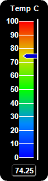
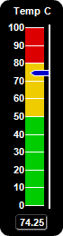
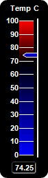
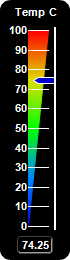
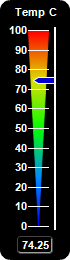
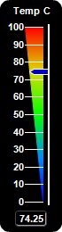

This example demonstrates vertical bar meters in a black coloring scheme.
ChartDirector 7.1 (C++ Edition)
Black Vertical Linear Meters






Source Code Listing
#include "chartdir.h"
void createChart(int chartIndex, const char *filename)
{
// The value to display on the meter
double value = 74.25;
// Create a LinearMeter object of size 70 x 260 pixels with black background and rounded corners
LinearMeter* m = new LinearMeter(70, 260, 0x000000);
m->setRoundedFrame(Chart::Transparent);
// Set the default text and line colors to white (0xffffff)
m->setColor(Chart::TextColor, 0xffffff);
m->setColor(Chart::LineColor, 0xffffff);
// Set the scale region top-left corner at (28, 30), with size of 20 x 196 pixels. The scale
// labels are located on the left (default - implies vertical meter)
m->setMeter(28, 30, 20, 196);
// Set meter scale from 0 - 100, with a tick every 10 units
m->setScale(0, 100, 10);
// The tick line width to 1 pixel
m->setLineWidth(0, 1);
// Demostrate different types of color scales and putting them at different positions
double smoothColorScale[] = {0, 0x0000ff, 25, 0x0088ff, 50, 0x00ff00, 75, 0xdddd00, 100,
0xff0000};
const int smoothColorScale_size = (int)(sizeof(smoothColorScale)/sizeof(*smoothColorScale));
double stepColorScale[] = {0, 0x00cc00, 50, 0xeecc00, 80, 0xdd0000, 100};
const int stepColorScale_size = (int)(sizeof(stepColorScale)/sizeof(*stepColorScale));
double highLowColorScale[] = {0, 0x0000ff, 70, Chart::Transparent, 100, 0xff0000};
const int highLowColorScale_size = (int)(sizeof(highLowColorScale)/sizeof(*highLowColorScale));
if (chartIndex == 0) {
// Add the smooth color scale at the default position
m->addColorScale(DoubleArray(smoothColorScale, smoothColorScale_size));
} else if (chartIndex == 1) {
// Add the step color scale at the default position
m->addColorScale(DoubleArray(stepColorScale, stepColorScale_size));
} else if (chartIndex == 2) {
// Add the high low scale at the default position
m->addColorScale(DoubleArray(highLowColorScale, highLowColorScale_size));
} else if (chartIndex == 3) {
// Add the smooth color scale starting at x = 28 (left of scale) with zero width and ending
// at x = 28 with 20 pixels width
m->addColorScale(DoubleArray(smoothColorScale, smoothColorScale_size), 28, 0, 28, 20);
} else if (chartIndex == 4) {
// Add the smooth color scale starting at x = 38 (center of scale) with zero width and
// ending at x = 28 with 20 pixels width
m->addColorScale(DoubleArray(smoothColorScale, smoothColorScale_size), 38, 0, 28, 20);
} else {
// Add the smooth color scale starting at x = 48 (right of scale) with zero width and ending
// at x = 28 with 20 pixels width
m->addColorScale(DoubleArray(smoothColorScale, smoothColorScale_size), 48, 0, 28, 20);
}
// Add a blue (0x0000cc) pointer with white (0xffffff) border at the specified value
m->addPointer(value, 0x0000cc, 0xffffff);
// Add a label at the top-center using 8pt Arial Bold font
m->addText(m->getWidth() / 2, 5, "Temp C", "Arial Bold", 8, Chart::TextColor, Chart::Top);
// Add a text box at the bottom-center. Display the value using white (0xffffff) 8pt Arial Bold
// font on a black (0x000000) background with depressed grey (0x444444) rounded border.
TextBox* t = m->addText(m->getWidth() / 2, m->getHeight() - 7, m->formatValue(value, "2"),
"Arial Bold", 8, 0xffffff, Chart::Bottom);
t->setBackground(0x000000, 0x444444, -1);
t->setRoundedCorners(3);
// Output the chart
m->makeChart(filename);
//free up resources
delete m;
}
int main(int argc, char *argv[])
{
createChart(0, "blackvlinearmeter0.png");
createChart(1, "blackvlinearmeter1.png");
createChart(2, "blackvlinearmeter2.png");
createChart(3, "blackvlinearmeter3.png");
createChart(4, "blackvlinearmeter4.png");
createChart(5, "blackvlinearmeter5.png");
return 0;
}